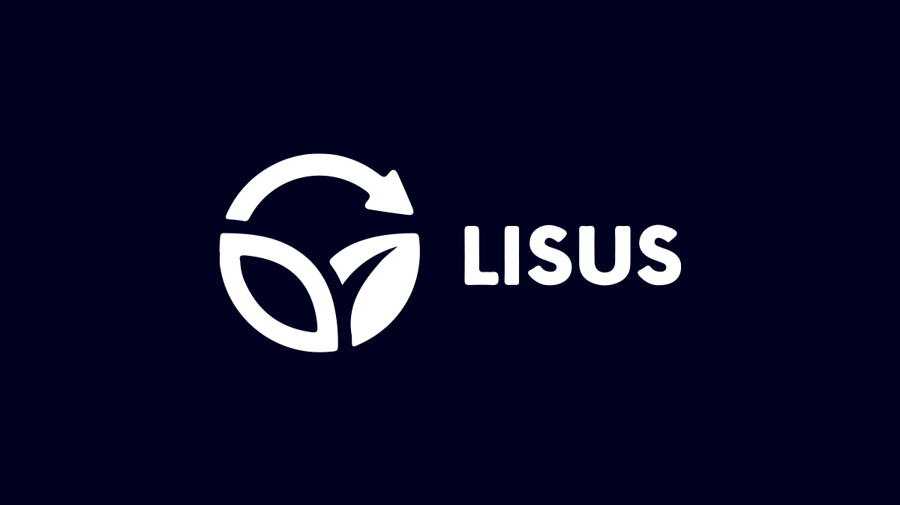
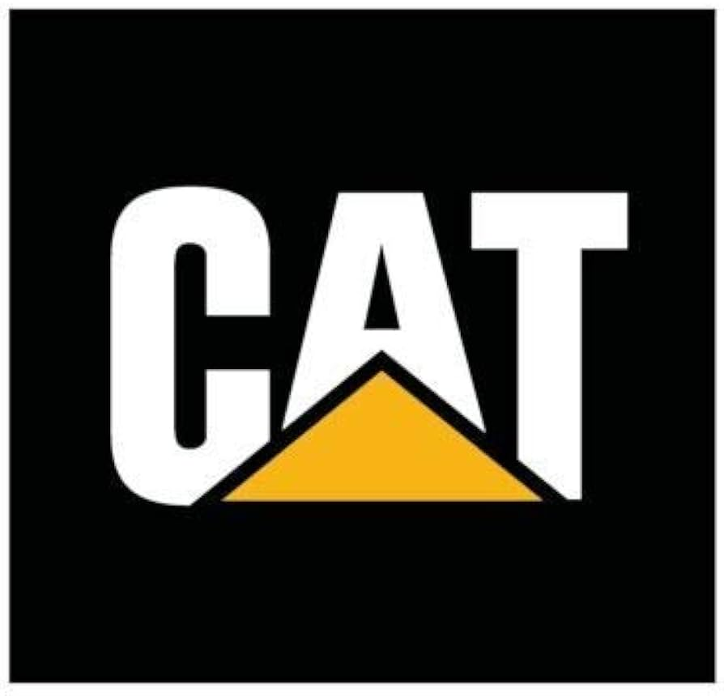
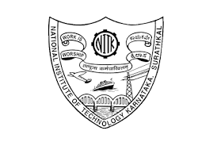
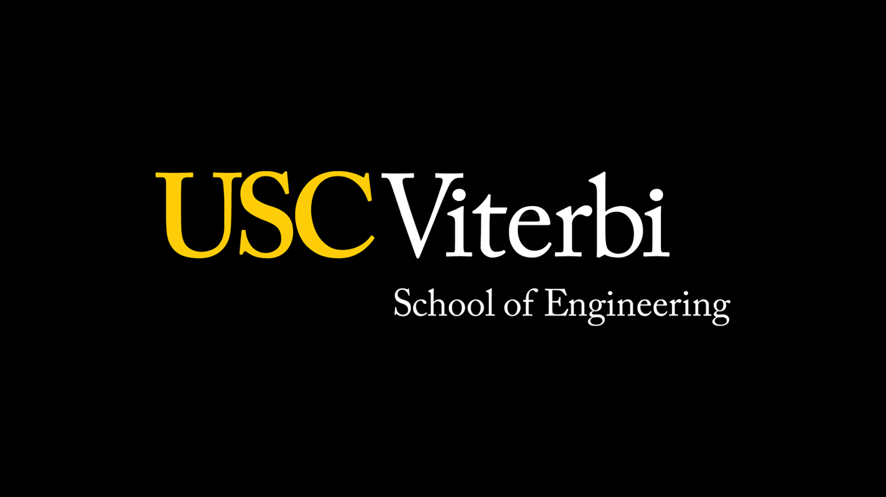
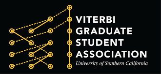

Developed the USC Women in Engineering (WIE) website, benefiting 2,440 members.
Created the WIE Leadership Conference 2024 website using HTML, CSS, and JavaScript.
Tools and Technologies: HTML, CSS, JavaScript, Web Development
Ford Motor Company
May 2024 - Aug 2024
Data Science Intern
Contributed to Ford’s Electric Vehicle (EV) Charging Taskforce by building and optimizing data pipelines for handling big data on Google Cloud Platform (GCP) using BigQuery SQL and Dataform, reducing query runtime by 50%.
Expanded analytics capabilities to a global scale by analyzing Germany’s EV charging data, extracting critical insights to enhance the public charging experience.
Contributed to topic-wise sentiment analysis on charging station reviews, explored advanced Aspect-Based Sentiment Analysis (ABSA) and Prompt Engineering techniques, and improved the user sentiment dashboard.
Annotated user reviews for model training data, used Python to calculate agreement scores; participated in consensus-building meetings, improving agreement scores by 12%.
Improved data accuracy and integrity by resolving discrepancies in the data pipeline, ensuring high-quality, real-time insights for executive decision-making.
Collaborated with teams using Agile methodologies and tools like Rally and Jira to track work, manage user stories, and drive operational efficiencies through iterative development.
Participated in the Ford Quality Hackathon, where the team used machine learning and prompt engineering to evaluate user reviews, uncovering findings to enhance vehicle quality.
Participated in the Intern Better Tomorrow Challenge (ideated innovative platform-based solution for smarter collaboration).
Tools and Technologies: Python, SQL, JSON, APIs, Google Cloud Platform (GCP), BigQuery, Dataform, LookerStudio, Qlik Sense, MetaPix, Big Data, Data Analytics, Data Engineering, Data Pipelines, Data Processing, Data Annotation, Agreement Scores (Fleiss' Kappa), Dataloop, Vertex AI, Machine Learning, Natural Language Processing (NLP), Aspect-Based Sentiment Analysis (ABSA), Prompt Engineering, Large Language Models (LLMs), Rally, Jira, Agile Methodologies.

LISUS Energy
Jun 2023 - Jul 2023
Data Science Intern
Analyzed remote-sensing satellite data using Python, Pandas, Numpy, and Matplotlib, contributing to a data-driven tool for sustainable exploration of critical minerals.
Tools and Technologies: NumPy, Pandas, Matplotlib, Python

Caterpillar Inc.
May 2021 - Jul 2021
Software Engineer Intern
Collaborated with a team to develop an Ignition Delay Prediction Model for Compression Ignition engines, leveraging Python and Cantera to enhance engine failure analysis.
Applied data engineering techniques to manage and analyze large volumes of engine test data using Pandas, Numpy, and Matplotlib, enabling data-driven decision-making.
Rectified Ignition Delay Prediction discrepancy within company’s proprietary software, leading to more reliable engine performance insights.
Streamlined code for over 50% reduction in runtime, optimizing the performance of the engine analysis software and improving overall program efficiency.
Tools and Technologies: Cantera, NumPy, Pandas, Matplotlib, Python, Microsoft Excel, Data Analysis

National Institute of Technology Karnataka
Mar 2020 - Feb 2021
Software Engineer Intern
Led a team of three in the design and development of 12 interactive simulations for Engineering Thermodynamics, using HTML5, CSS3, and JavaScript to create engaging and educational tools.
Applied software development best practices and Agile methodologies to ensure the timely delivery and quality of simulations, enhancing the learning experience for students.
Developed online tools that facilitated remote learning and improved accessibility to engineering concepts, fostering a hands-on approach to learning through visual animations and dynamic content.
Tools and Technologies: HTML, CSS, JavaScript, Team Leadership, Agile
Larsen & Toubro
May 2019 - Jun 2019
Engineering Intern
Assisted in engineering projects, gaining hands-on experience in manufacturing and project management.
Tools and Technologies: Manufacturing, Machinery, Management
Additional Experience
USC Women in Engineering
Oct 2023 - Present
Marketing Director
Led a four-person team in developing and executing successful event promotion and marketing efforts, including creating engaging content for Instagram and LinkedIn.
Designed promotional flyers and marketing content.
Tools and Technologies: Canva, Social Media Content, Marketing, Content Writing, Leadership
Microsoft AI Skills Program (TEALS)
Sep 2023 - Present
Computer Science Teaching Assistant
Supported the instruction of Advanced Placement (AP) Computer Science students at high schools in Lynwood, CA by assisting students in understanding foundational Computer Science concepts, guiding them through programming exercises, and troubleshooting technical issues.
Skills: Teaching, Fundamental CS concepts, Mentoring, Problem-Solving, Communication Skills

USC Viterbi Admissions and Student Engagement (VASE) Office
Jul 2023 - Aug 2024
Orientation Leader
Led and facilitated orientation for new graduate and undergraduate students at USC Viterbi, delivering presentations on student life, organizing campus-wide events, managing check-in and event logistics, and providing specialized training on inclusive practices and being a prosocial upstander, while actively fostering community and student engagement.
Skills: Presentation Skills, Leadership, Event Planning, Public Speaking, Interpersonal Communication

USC Viterbi Graduate Student Association (VGSA)
Jan 2024 - May 2024
Ambassador
Serving as WIE's liaison (USC Women in Engineering) to VGSA (Viterbi Graduate Student Association), the student representative-led governing body for USC Viterbi graduate students.
Facilitated communication between WIE and VGSA, organizing collaborative events to mutually benefit and maximize impact for both organizations.
Skills: Event Coordination, Effective Communication